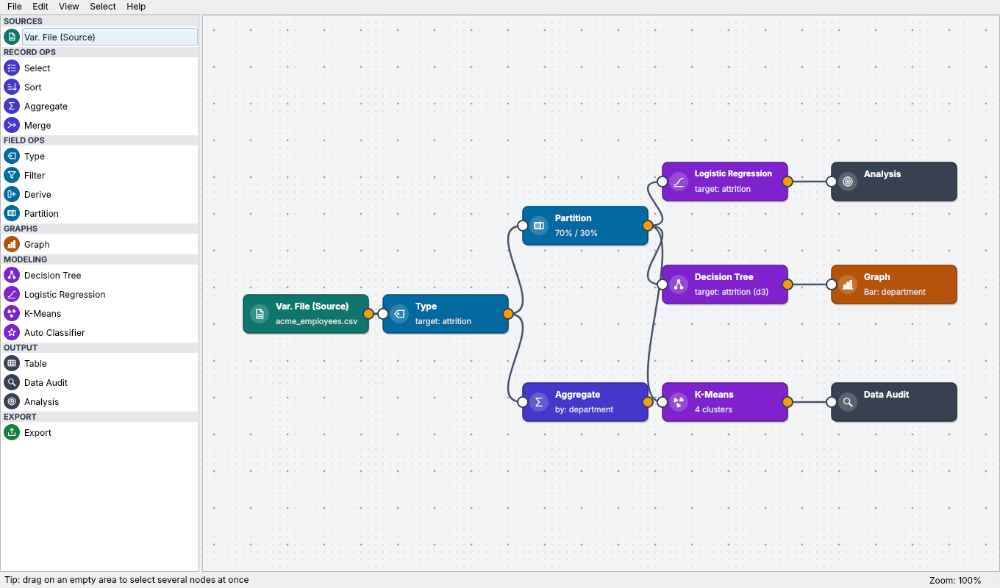
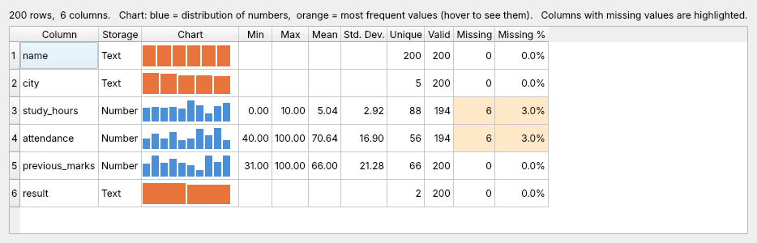
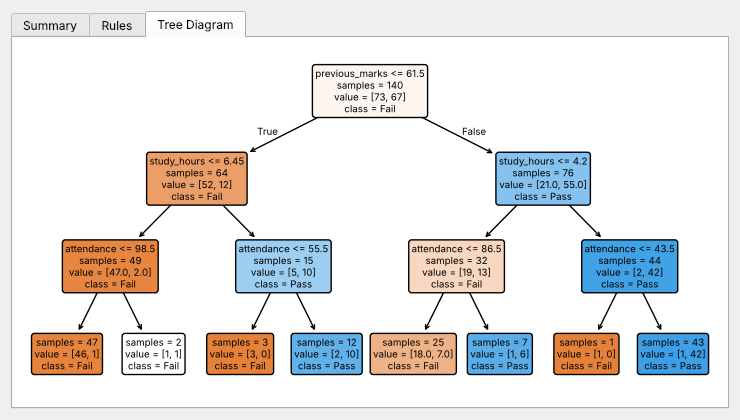
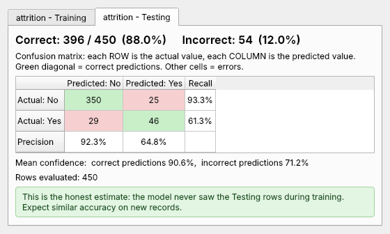

FH·01
Data Systems Division
Forgehold Data Modeler
A visual, node-based data mining workbench. Analysts drag source, transform, and model nodes onto a canvas, wire them into a stream, and execute the entire pipeline without writing code — the working method established by SPSS Modeler, rebuilt on a modern Python core.
The execution engine resolves the node graph into a dependency-ordered pipeline, so changing one upstream node re-runs only what depends on it. Designed for production analysis work, not demonstration.
- Status
- Completed
- Core
- Python
- Platform
- Desktop
- Category
- Analytics tooling
Interface



